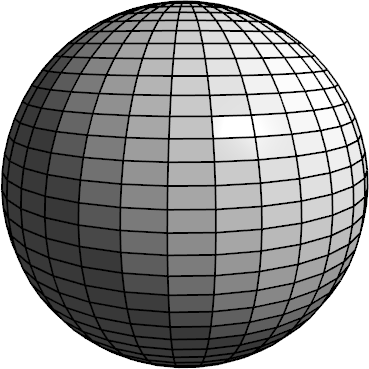
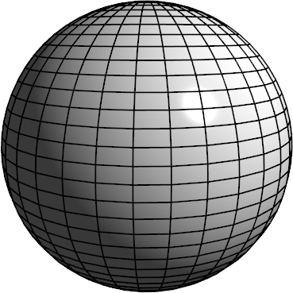
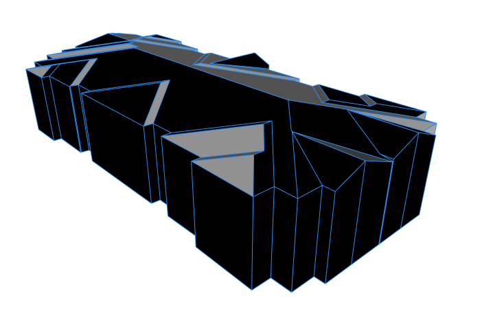
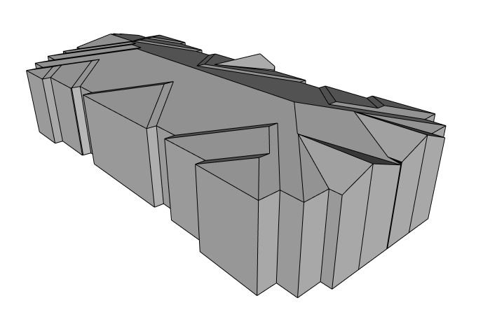

setNormals operation
setNormals(normalsMode)
normalsMode selector
| hard | Use the face normals. This is equivalent to softenNormals(0). |
| conform | Same as hard. Computes consistent normals using the connectivity and a heuristic that favors the world's up direction. |
| soft | For each vertex, use the average of the adjacent face normals. This is equivalent to softenNormals(180). |
| auto | Same as soft except that edges where face normals meet at an angle greater than or equal to 30 degrees are shaded as hard edges. This is equivalent to softenNormals(30). |
The soft and auto modes require disconnected shapes to be combined and duplicate vertices to be merged in order to compute vertex normals using adjacent face normals.
The conform mode is not successful in every case.
If the conform mode is not successful consider the following options:
- Combine disconnected shapes belonging to a single building.
- Merge vertices and remove duplicate faces using cleanupGeometry(faces, 0.1) operation.
- In case of discontinuous textures not all duplicate faces are removed. Consider deleteUV operation.
The setNormals operation sets the normals of the current shapes' geometry to the desired mode.
Related
Examples
Shaded Sphere


Consistent normals

